Module 13 Basics of ggplot
(Refer heavily to https://ggplot2-book.org/introduction.html)
Learning goals
- Understand what
ggplot2is and why it’s used - Be able to think conceptually in the framework of the “grammar of graphics”
- Learn the syntax for creating different plots using using
ggplot2
13.1 Thinking about data visualization
Let’s start with a video: https://youtu.be/5Zg-C8AAIGg.
And one by Hans Rosling too: https://www.youtube.com/watch?v=FACK2knC08E
What is ggplot?
ggplot2 is an R package. It’s one of the most downloaded packages in the R universe, and has become the gold standard for data visualization. It’s extremely powerful and flexible, and allows for creating lots of visualizations of different types, ranging from maps to bare-bones academic publications, to complex, paneled charts with labeling, etc. Because the syntax is so different from “base” R, it can give the impression of having a somewhat steep learning curve. But in reality, because the principles are so conceptually simple, learning is fairly fast. Generally those who choose to learn it stick with it; that is, once you go gg, you don’t go back.
The name and concept
“GG” stands for “grammar of graphics,” with “grammar” meaning “the fundamental principles or rules of an art or science” (Wickham 2010). The most well-known “grammar of graphics” was written in 2005 and laid out some abstract principles for describing statistical graphics (Wilkinson 2005). The basic idea is that all graphs can be described using a layered grammar, and that all graphs have the same general elements…
- data
- aesthetics (mapping) of variables to objects
- geometric objects
… whereas some graphs have additional elements…
- statistical transformations
- labs
- facets
- themes
Practice
Titanice data set
library(ggplot2)
library(readr)
library(ggthemes)
library(dplyr)
titanic<- read_csv("https://raw.githubusercontent.com/databrew/intro-to-data-science/main/data/deaths.csv")Scatter plot
Call the plot
ggplot()Aesthetics (mapping variables to the x y plane)
ggplot(data = titanic, aes(x = Age, y = Fare))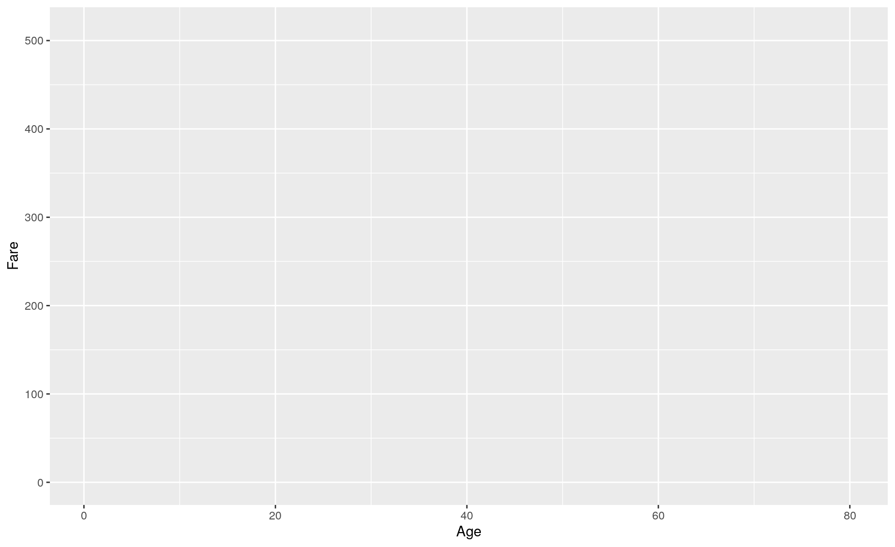
Geometry
ggplot(data = titanic, aes(x = Age, y = Fare)) + geom_point()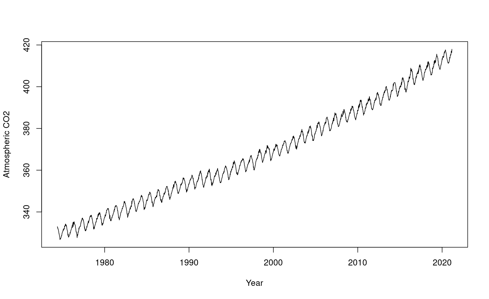
Statistics
ggplot(data = titanic, aes(x = Age, y = Fare)) + geom_point() + geom_smooth(method = 'lm')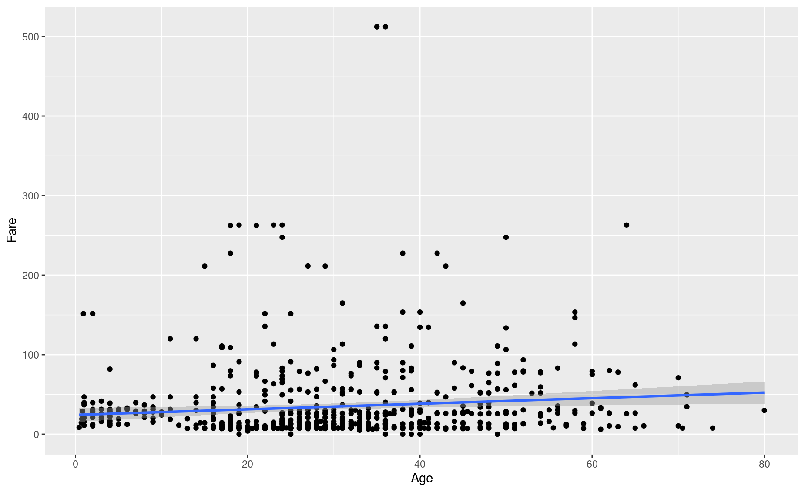
Labs
ggplot(data = titanic, aes(x = Age, y = Fare)) + geom_point() + geom_smooth(method = 'lm') + labs(title = 'Relationship between Age and Fare')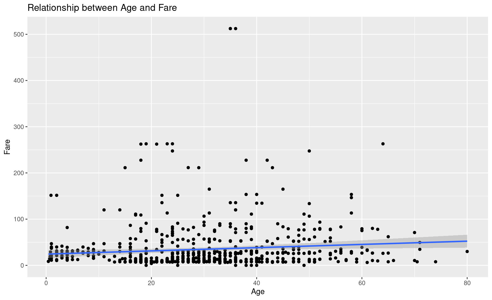
Facets
ggplot(data = titanic, aes(x = Age, y = Fare)) + geom_point() + geom_smooth(method = 'lm') + labs(title = 'Relationship between Age and Fare') +
facet_wrap(~Sex)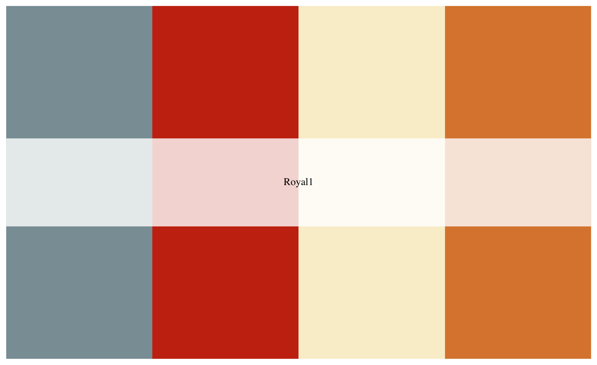
Themes
ggplot(data = titanic, aes(x = Age, y = Fare)) + geom_point() + geom_smooth(method = 'lm') + labs(title = 'Relationship between Age and Fare') +
facet_wrap(~Sex) + theme_fivethirtyeight()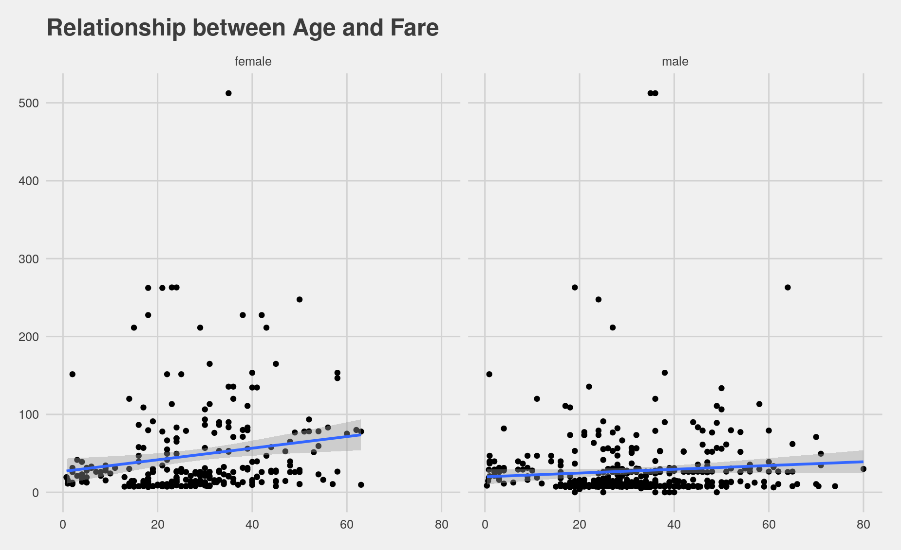
Barplot
Get counts for sex
ggplot(data = titanic, aes(x = Sex)) + geom_bar(stat='count')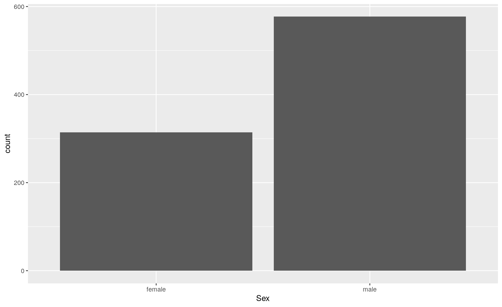
Explicitly set y to another variable
titanic_age <- titanic %>% group_by(Sex) %>% summarise(mean_age = mean(Age, na.rm= TRUE))
ggplot(data = titanic_age, aes(x = Sex,y= mean_age)) + geom_bar(stat = 'identity')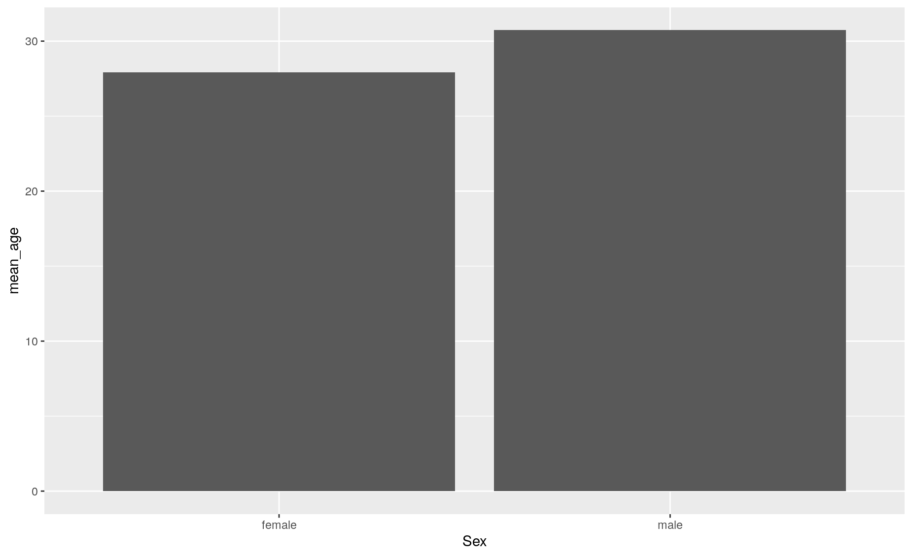
Fill
ggplot(data = titanic_age, aes(x = Sex,y= mean_age)) + geom_bar(stat = 'identity', fill = 'blue', alpha = 0.5) 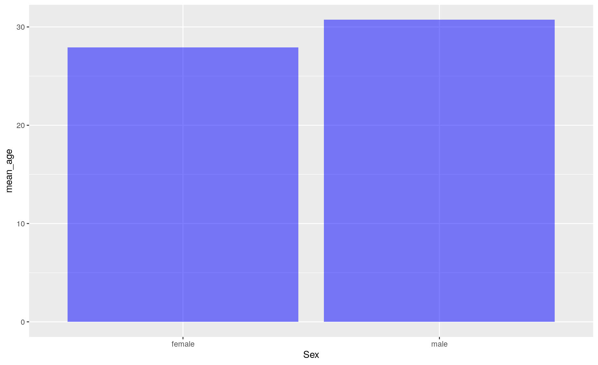
Labs
ggplot(data = titanic_age, aes(x = Sex,y= mean_age)) + geom_bar(stat = 'identity', fill = 'blue', alpha = 0.5) + labs(y = 'Mean age', title = 'Average age by sex')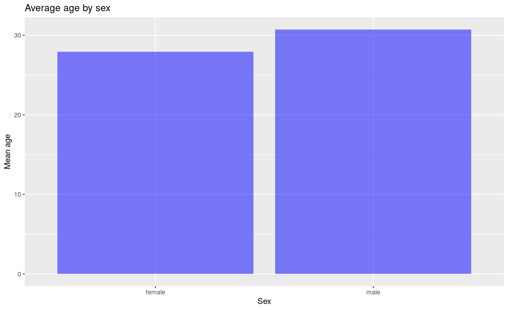
Add another variable
titanic_em <- titanic %>% group_by(Sex, Survived) %>% summarise(mean_age= mean(Age, na.rm = TRUE))
titanic_em <- titanic_em %>% mutate(Survived = ifelse(Survived == 1, 'Survived','Dead' ))
ggplot(data = titanic_em, aes(x=Sex, y=mean_age, fill = Survived)) + geom_bar(stat='identity')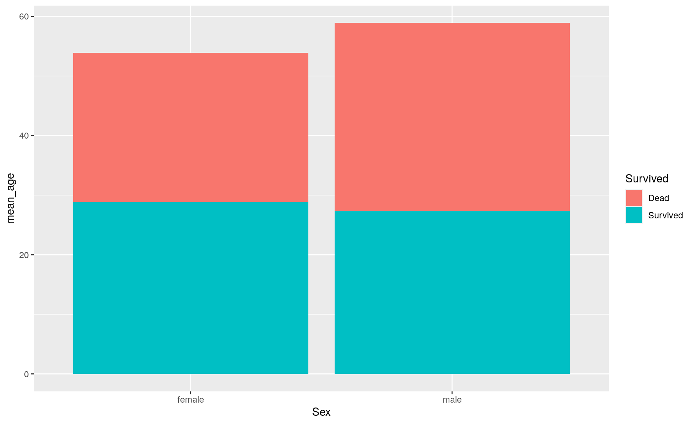
Dodge
ggplot(data = titanic_em, aes(x=Sex, y=mean_age, fill = Survived)) + geom_bar(stat='identity', position = 'dodge') 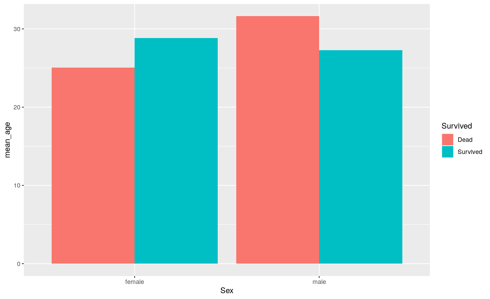
Scales
ggplot(data = titanic_em, aes(x=Sex, y=mean_age, fill = Survived)) + geom_bar(stat='identity', position = 'dodge', alpha = 0.7) + scale_fill_manual(values = c('blue', 'grey'))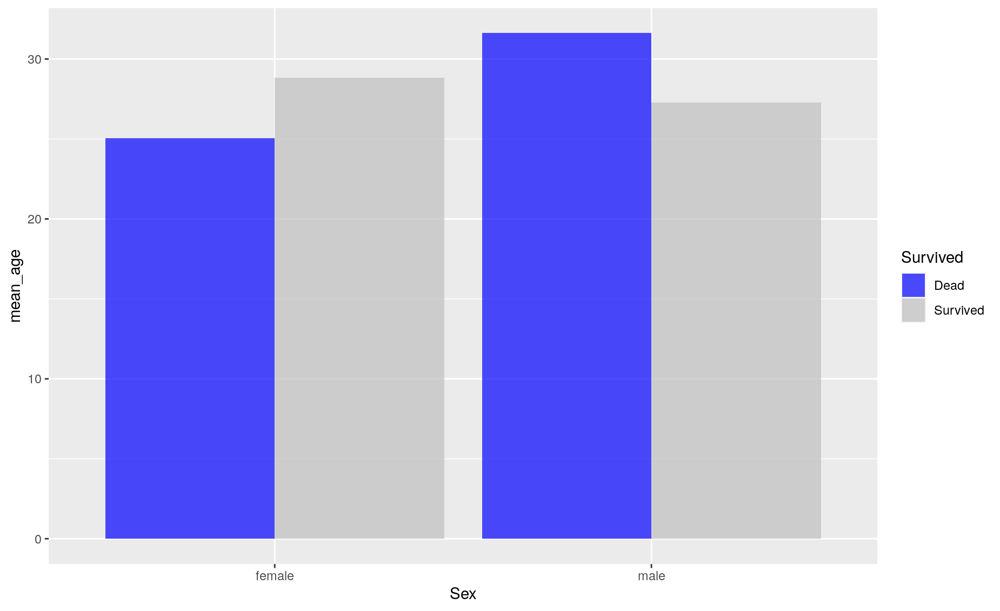
Practice 1
library(babynames)
library(dplyr)
library(ggplot2)
bn <- babynames
# subset by the name Francis
francis <- bn %>% filter(name == 'Francis', sex == 'M')
# line plot
ggplot(data=francis, aes(x = year, y =n )) + geom_line() + labs(x = 'Year', y = 'Number of boys named Francis')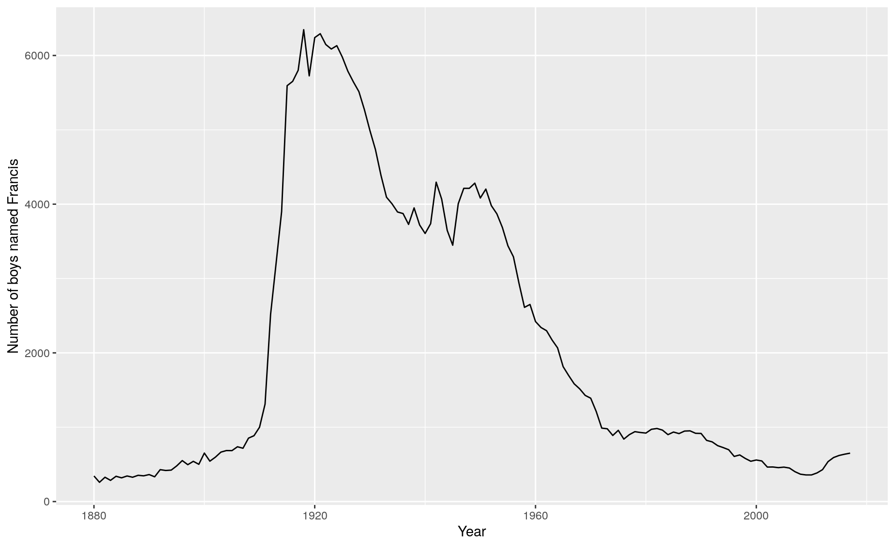
# layer with points
ggplot(data=francis, aes(x = year, y =n )) + geom_line() + geom_point() + labs(x = 'Year', y = 'Number of boys named Francis')
ggplot(data=francis, aes(x = year, y =n )) + geom_line() + geom_point() + labs(x = 'Year', y = 'Number of boys named Francis')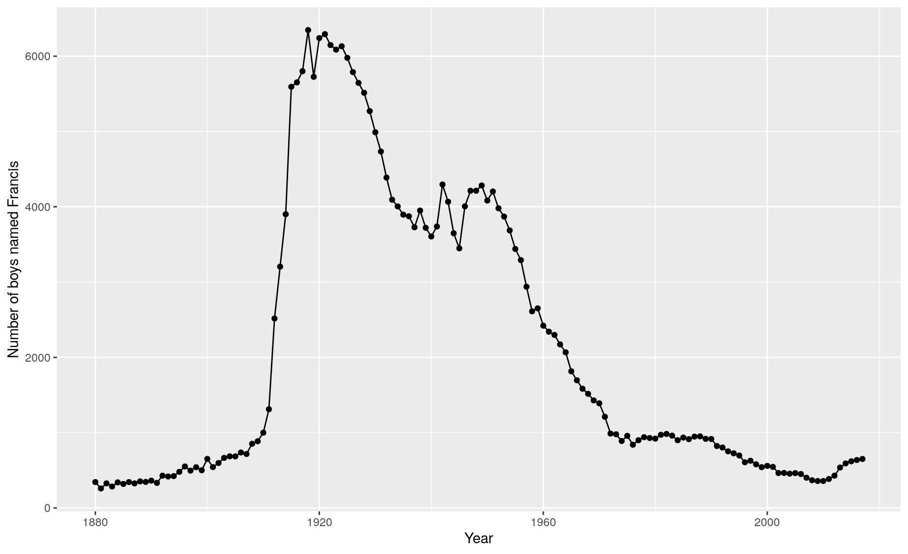
Practice exercises 1
Create a line chart showing the number of girls named Mary over time
Change the color of the line to blue
Add a title to the plot “The name Mary over time”
Create a bar chart showing the number of girls named Emma, Olivia, Ava, Sophia, and Emily in 2010
Change the X label to “Names” and the y label to “Total”
Change the color of the bar to grey and make it more transparent
Create a bar chart showing the number of people named Emma, Olivia, Ava, Sophia, and Emily in 2010, colored by sex
Create a cool-looking chart showing your name over time
Practice exercises 2
First, let’s read in some data on health from the World Bank:
library(readr)
library(dplyr)
library(gapminder)
gm <- gapminder::gapminderHow many rows are in the dataset?
How many clumns are in the dataset?
What are the names of the columns?
What is the oldest year in the dataset?
What is the country/year with the greatest population in the dataset?
Get the average GDP per capita for each continent in 1952.
Get the average GDP per capita for each continent for the most recent year in the dataset.
Average GDP is a bit misleading, since it does not take into account the relative size (in population) of the different countries (ie, China is a lot bigger than Cambodia). Look up the function
weighted.mean. Use it to get the average life expectancy by continent for the most recent year in the dataset, weighted by population.Make a barplot of the above table (ie, average life expectancy by continent, weighted by population).
Make a point plot in which the x-axis is country, and the y-axis is GDP. Add the line
theme(axis.text.x = element_text(angle = 90))in order to make the x-axis text vertically aligned. What’s the problem with this plot? How many points are there per country?Make a new version of the above, but filter down to just the earliest year in the dataset.
Make a scatterplot of life expectancy and GDP per capita, just for 1972.
Make the same plot as above, but for the most recent year in the data.
Make the same plot as the above, but have the size of the points reflect the population.
Make the same plot as the above, but have the color of te points reflect the continent.
Filter the data down to just the most recent year in the data, and make a histogram (
geom_histogram) showing the distribution of GDP per capita.Get the average GDP per capita for each continent/year, weighted by the population of each country.
Using the data created above, make a plot in which the x-axis is year, the y-axis is (weighted) average GDP per capita, and the color of the lines reflects the content.
Make the same plot as the above, but facet the plot by continent.
Make the same plot as the above, but remove the coloring by continent.
Make a plot showing France’s population over time.
Make a plot showing all European countries’ population over time, with color reflecting the name of the country.
Create a variable called
status. If GDP per capita is over 20,000, this should be “rich”; if between 5,000 and 20,000, this should be “middle”; if this is less than 5,000, this should be “poor.”Create an object with the number of rich countries per year.
Create an object with the percentage of countries that were rich each year.
Create a plot showing the percentage of countries which were rich each year.
Create an object with the number of people living in poor countries each year.
Create a chart showing the number of people living in rich, medium, and poor countries per year (line chart, coloring by
status).Create a chart showing the life expectancy in Somalia over time.
Create a chart showing GDP per capita in Somalia over time.
Create a histogram of life expectancy for the most recent year in the data. Facet this chart by continent.
Create a barchart showing average continent-level GDP over time, weighted for population, with one bar for each year, stacked bars with the color of the bars indicating continent (
geom_bar(position = 'stack')).Create the same chart as above, but with bars side-by-side (
geom_bar(position = 'dodge'))Generate 3-5 more charts / tables that show interesting things about the data.
Make the above charts as aesthetically pleasing as possible.